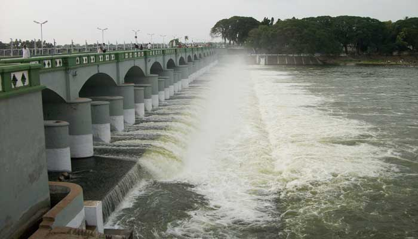
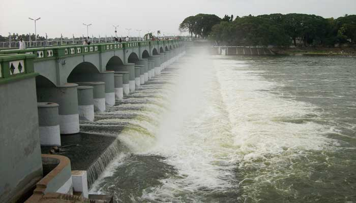

Kanyakumari,also known as Cape Comorin is a popular tourist destination located at the southernmost tip of mainland India. The Thiruvalluvar Statue, or the Valluvar Statue, is 133 ft stone sculpture of the Tamil Thiruvalluvar, author of the Tirukkural, which is a major attraction for visitors. Kanyakumari is the only place where one can enjoy the view of both Sunrise and Sunset. Padmanabhapuram Palace is a magnificent palace that was the seat of the rulers of the erstwhile Travancore Kingdom. It is a perfect example of traditional Kerala architecture. The Gandhi memorial has a unique design and is built in such a way that the first rays of the sun fall on the exact spot where the ashes of Gandhi were kept. Padmanabhapuram Palace, Vivekananda Memorial, Tiruvalluvar Statue, Thirparappu Waterfalls and much more tourist places are waiting for you in Kanyakumari.
Mamallapuram, also known as Mahabalipuram, is a town in Chengalpattu district in the southeastern Indian state of Tamil Nadu, best known for the UNESCO World Heritage Site Of HINDU Mahabalipuram (or Mamallapuram), located along southeastern India’s Coromandel Coast, was a celebrated port city of the Pallavas. The Shore Temple, one of the most prominent landmarks in Mahabalipuram, is a stunning example of Dravidian architecture and is located on the coast of the Bay of Bengal. The group of monuments there consists of rock-cut cave temples, monolithic temples, bas-relief sculptures, and structural temples as well as the excavated remains of temples. Mahabalipuram is also known for its beautiful beaches, delicious seafood, and vibrant arts and crafts scene. It is definitely worth a visit for anyone interested in history, culture, and natural beauty.
Rameshwaram is a holy city located in the southern Indian state of Tamil Nadu. It is famous for its ancient temples, beaches, and religious significance. The most prominent attraction of Rameshwaram is the Ramanathaswamy Temple, one of the twelve Jyotirlinga temples dedicated to Lord Shiva. The city is also home to several other temples, including the Kothandaramaswamy Temple and the Dhanushkodi Temple. Pamban Bridge is a famous railway bridge that connects the town of Rameshwaram with mainland India. The view from the bridge is breathtaking. Dhanushkodi a small ghost town that was destroyed by a cyclone in 1964. The ruins of the town are an interesting sight to see.

 

Thanjavur is a popular tourist destination in Tamil Nadu known for its rich cultural heritage and stunning temples. The Brihadeeswara Temple, also known as the Big Temple, is one of the most significant landmarks in the city and is famous for its unique architecture and cultural importance.The Thanjavur Royal Palace is a sprawling complex that was once the residence of the Thanjavur Marathas. Gangaikonda Cholapuram Temple built by the Cholas, the temple is known for its stunning architecture and historical significance. Punnainallur Mariamman Temple is an ancient temple dedicated to the goddess Mariamman and is known for its beautiful architecture and intricate carvings. Sivaganga Park is a beautiful park located in the heart of Thanjavur and is known for its lush greenery, fountains, and walking trails.
Madurai is a historical city located in the southern Indian state of Tamil Nadu, known for its rich cultural heritage and beautiful temples. Meenakshi Amman Temple is a magnificent temple dedicated to Goddess Meenakshi, with beautiful architecture and sculptures.Thirumalai Nayak Palace built by King Thirumalai Nayak in the 17th - century, known for its Indo-Saracenic style architecture. Alagar Kovil is a Hindu temple located on a hilltop. It is dedicated to Lord Vishnu and is known for its beautiful architecture and stunning views. Gandhi Memorial museum is dedicated to the life and works of Mahatma Gandhi. Vaigai Dam was built across the Vaigai River, offering a great view and it is a great place for boating and picnics.
Ooty, also known as Udhagamandalam, is a popular hill station located in the southern state of Tamil Nadu, India. Known for its picturesque landscapes, stunning waterfalls, and charming tea estates, Ooty is a popular tourist destination that attracts visitors from all over the world. The Ooty Lake is a man-made lake located in the heart of the town. Visitors can enjoy boating and other water activities here while taking in the scenic surroundings. Doddabetta Peak is the highest peak in the Nilgiri Hills and offers panoramic views of the surrounding hills and valleys. The Botanical Gardens is a popular tourist attraction located in Ooty. The tribal museum in Ooty provides a glimpse into the lives and culture of the tribal communities in the region. Pykara Waterfalls is a popular tourist attraction located about 20 km from Ooty.